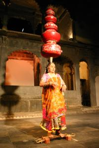

Le 19 décembre 2004,
Ca y est, nous voila enfin remis d’aplomb ! Nous decidons donc d’aller faire un tour sur le lac Pichola qui s’etant au pied du City Palace. Il est malheureusement asseche depuis longtemps, mais il garde tout son charme avec ce magnifique hotel : le Lake Palace, un ancien palais royal d’ete, plante au milieu du lac sur une petite ile. Nous gambadons a pieds a travers ce lac transforme en grande prairie a cause de la secheresse, parmi les vaches et les chevaux sauvages. Deci-dela, des femmes ramassent des dejections d’animaux afin de s’en servir comme combustible ou comme materiau de base pour la construction de leur hutte...
Un peu fatigue apres cette longue marche, Michael decide de rentrer se reposer a l’hotel. Je pars donc toute seule visiter cette etonnante galerie de cristal, commandee en Angleterre par un maharana en 1877 qui n’a jamais pu profiter de cette collection a cause de son deces premature. Cette galerie est magnifique ! Elle regroupe des chaises, des tables et meme un lit en cristal ! Au debut, je suis seule a visiter le musee, il n’y a pas un rat ! Meme pas de gardien... C’est tout juste si je ne pourrais pas partir avec une carafe en cristal sous le bras !
Puis un vieil Indien, venu egalement decouvrir Udaipur, m’accompagne durant cette visite. Nous discutons ensemble et ma foi, je le trouve vraiment sympathique ce bonhomme. Il vit a Bombay et est venu ici pour voir ses filles et ses arrieres-petites-filles, il a l’air tout fier ! Dans le prix du musee est inclu la possibilite de prendre un pot dans la grande salle de restaurant qui servait autrefois de salle d’audience pour les receptions des maharanas. Je ne vais pas m’en priver ! Il parait que cette salle d’audience, appellee Durbar Hall, est une des plus splendides du pays. Je le crois aisement... 
Je me retrouve seule, dans cette superbe piece pouvant accueillir au moins une centaine de personnes, surplombee d’imposants lustres en cristal. Je cherche au moins un serveur, il n’y a vraiment personne. Je finis par tambouriner a la porte d’une des immenses cuisines et aussitot, un serveur arrive la mine desole. Il me place dans un petit salon prive juxtaposant le Durbar Hall ou je peux m’extasier a mon aise sur la vue imprenable de ma fenetre sur le lac. Ca fait un drole d’effet de se retrouver seule dans un si chic et vaste endroit... L’atmosphere est etrange, pas du tout desagreable... Je me prends a revasser a ce temps, pas si lointain, ou les maharanas organisaient de grandes receptions a l’endroit meme ou je me trouve en ce moment. C’etait un autre temps, plein de richesses et des prestiges.
Je retourne retrouver mon homme qui se prelasse devant internet en m’attendant. Ca va, il n’est pas a l’article de la mort ! Nous partons ensemble assister a un spectacle de danses rajasthanaises. Le femme portant une dizaine de jarres sur la tete tout en marchant sur des lames d’epees ou de verre brise nous a beaucoup impressionnes.
Eve-Laure
{kind=link}